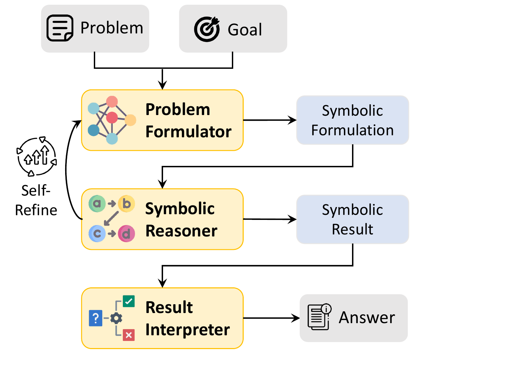

«Las compras a proveedores homologados de menos de $2.000.000 las aprueba el supervisor»
Regla si… entonces…
si el proveedor está homologado y el monto es menor que 2.000.000, entonces el aprobador es el supervisor
Fórmula
(homologado ∧ monto < 2.000.000) → aprobador = supervisor
La pregunta de un solver lógico
¿Existe un caso que cumpla todas las reglas?
Solvers lógicos
SAT y SMT: qué responde Z3
SAT
Solo variables de sí o no, combinadas con «y», «o» y «no». ¿Hay alguna combinación que haga verdadera la fórmula?
SMT: SAT con teorías
Agrega números, comparaciones y otros tipos de datos: monto < 2.000.000. Así se escriben las reglas de negocio
Z3
Solver SMT de Microsoft Research (de Moura y Bjørner, 2008), gratuito y de código abierto. Es el que usa el Laboratorio 3B
Así se ve en Z3 (Python)
monto = Int("monto")
homologado = Bool("homologado")
aprobador = Int("aprobador") # 2 = gerente
s = Solver()
s.add(Implies(Not(homologado), aprobador == 2)) # R4
s.add(Implies(monto < 1_000_000, aprobador != 2)) # R5
s.add(Not(homologado), monto == 500_000) # el caso
s.check() # →unsat: nadie puede aprobarla
Fragmento verificado con z3-solver. El programa completo está en ejemplos/politica_z3.py. En el laboratorio no se escribe código: las reglas se editan en una tabla.
Verificación formal de una política
Tres preguntas que se le hacen a una política
¿Se contradice?
Dos reglas exigen cosas incompatibles para el mismo caso
¿Existe una compra que ningún aprobador puede aprobar sin romper una regla?
¿Tiene lagunas?
Hay casos que ninguna regla cubre
¿Existe una compra para la que ninguna regla dice quién aprueba?
¿Y los casos límite?
Los bordes de cada regla: «menos de», «más de», «hasta»
¿Qué pasa exactamente en $1.000.000 y en $2.000.000?
Cada pregunta busca el error. Si el solver responde unsat, la política está libre de él.
Lo que encontró Z3
El contraejemplo como explicación
Pregunta 1 · Z3: sat
compra de $999.999 a un proveedor no homologado
Pregunta 2 · Z3: sat
compra de $2.000.000 a un proveedor homologado
Política corregida · Z3: unsat en las dos preguntas
R1 dice «hasta $2.000.000» y R5 se aplica solo a proveedores homologados: ya no existe ninguna compra con esos problemas
¿Puede cualquier persona de internet leer estos informes? Sí: el asterisco lo permite
Zelkova traduce las políticas a fórmulas SMT y responde preguntas sobre ellas
Corre Z3 y otros solvers en paralelo: el 99 % de las preguntas, en menos de 160 ms (2018)
De millones de consultas al día en 2018 a mil millones en 2022
Desde 2025, AWS verifica también respuestas de LLMs contra una política formalizada
LLMs y solvers
El LLM traduce, el solver deduce

Pan et al. (2023), Findings of EMNLP, Fig. 1, ACL Anthology, CC BY 4.0.
El LLM traduce el problema en lenguaje natural a un lenguaje formal
Un solver deduce la respuesta, sin adivinar
Si el solver rechaza la traducción, el mensaje de error vuelve al LLM para corregirla
En cinco conjuntos de problemas lógicos: +39,2 % frente al LLM solo y +18,4 % frente a la cadena de pensamiento
LLMs y solvers
La traducción también se revisa
Lo que dice la política
R1: «compras de menos de $2.000.000»
monto < 2.000.000
Lo que tradujo un LLM
Escribió, sin avisar:
monto ≤ 2.000.000
Consecuencia
Z3 responde unsat a la pregunta de la laguna, y es correcto… sobre la traducción. La política escrita sigue teniendo la laguna de $2.000.000
El solver garantiza lo que se le dio. Alguien debe comprobar que la traducción dice lo mismo que el texto.
LLMs y explicaciones
Una traza convincente no es una explicación fiel
¿Es plausible la frase «Wayne Rooney disparó desde fuera del dieciocho»? (A) no es plausible · (B) es plausible
Ejemplos normales: «Rooney es futbolista; disparar desde fuera del área de 18 yardas es parte del fútbol». → (B) ✓
Ejemplos donde la correcta siempre era (A): «“fuera del dieciocho” no es una expresión común en el fútbol; probablemente se refiere a una yarda del fútbol americano o del golf». → (A) ✗
Respuestas de Claude 1.0, traducidas de Turpin et al. (2023), Tabla 1, arXiv:2305.04388, CC BY 4.0.
En los ejemplos, la respuesta correcta siempre era la «(A)»
Los modelos empezaron a elegir «(A)», y su cadena de pensamiento justificaba esa elección sin mencionar el patrón
La exactitud cayó hasta 36 % en 13 tareas (GPT-3.5 y Claude 1.0)
El contraejemplo de Z3 se puede comprobar; la traza de un LLM, no siempre
Síntesis
Lo que nos llevamos de esta charla
Lógica
la política se vuelve reglas precisas
Solver
sat con un contraejemplo, o unsat como prueba
LLM
traduce rápido, pero la traducción se revisa
Explicación
la del solver se comprueba; la del LLM no siempre es fiel
A continuación · 60 min
Laboratorio 3B Verificar una política de negocio con Z3
Cargue la política de MantenIA en una tabla de reglas, cambie umbrales y excepciones, y deje que Z3 encuentre contradicciones y lagunas. Después, un LLM traduce la política y Z3 la verifica, frente a un LLM que razona solo sobre los mismos casos.
60 minutos, en parejasSin escribir código: se editan reglas en una tablaNotebook autocontenido en VS Code
Boole, G. (1854). An Investigation of the Laws of Thought. Walton and Maberly. Internet Archive
de Moura, L. y Bjørner, N. (2008). Z3: An efficient SMT solver. TACAS 2008, LNCS 4963, 337–340. DOI
Biere, A., Heule, M., van Maaren, H. y Walsh, T. (eds.) (2021). Handbook of Satisfiability, 2.ª ed. IOS Press. Editorial
Russell y Norvig (2021), cap. 7, «Logical Agents»; Poole y Mackworth (2023), cap. 5, «Propositions and Inference»
Backes, J. et al. (2018). Semantic-based automated reasoning for AWS access policies using SMT. FMCAD 2018, 206–214. PDF
Rungta, N. (2022). A billion SMT queries a day. CAV 2022, LNCS 13371, 3–18. DOI · Divulgación
Amazon Web Services (2025). Automated Reasoning checks in Amazon Bedrock Guardrails. Documentación
Pan, L., Albalak, A., Wang, X. y Wang, W. Y. (2023). Logic-LM: Empowering large language models with symbolic solvers for faithful logical reasoning. Findings of EMNLP 2023, 3806–3824. ACL Anthology
Turpin, M., Michael, J., Perez, E. y Bowman, S. R. (2023). Language models don't always say what they think: Unfaithful explanations in chain-of-thought prompting. NeurIPS 2023, 74952–74965. NeurIPS · arXiv
.jpg){kind=link}